Outdoor Therapie combineert wat zelden samenkomt: outdoor adventure en therapie. Sinds de oprichting in 2021 bouwen wij mee aan het merk — van merkidentiteit en logo tot website, fotoshoot en cinematic content op locatie in de bergen.
De branding ademt rust en aardetinten — kleurenpalet uit het berglandschap, helder lettertype, een logo dat natuur en menselijke groei verenigt. De website neemt bezoekers mee op een reis: serene foto's, helder kleurenschema, duidelijke routes naar contact en boekingen.
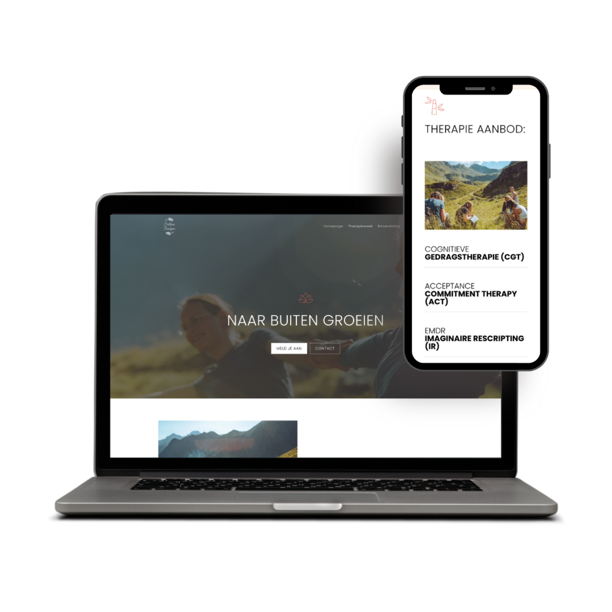
Op locatie in de bergen — eigen fotografie en drone-footage tijdens een meerdaagse expeditie. Het visuele DNA van Outdoor Therapie staat of valt met deze beelden.

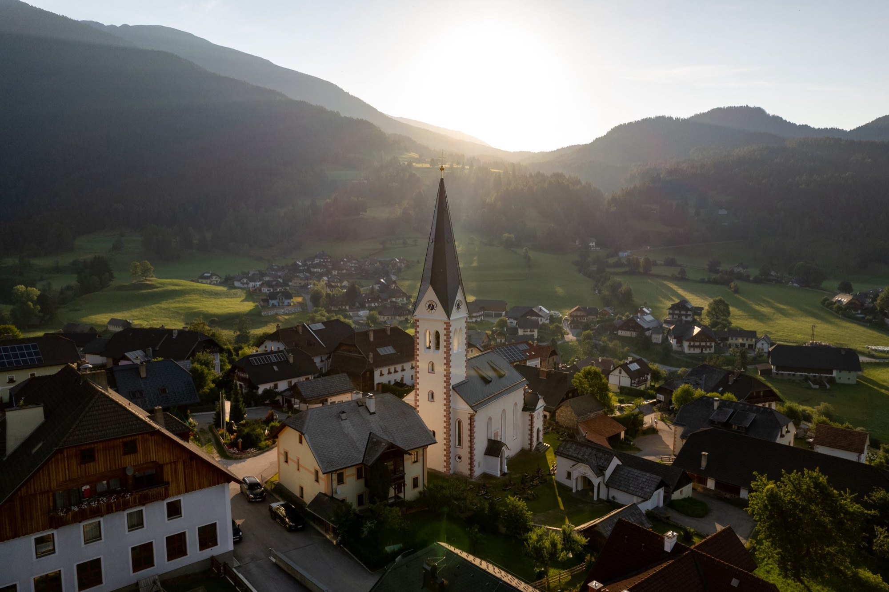
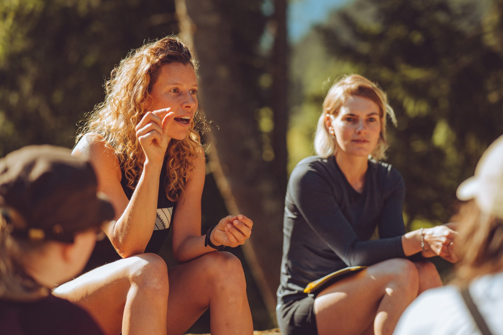
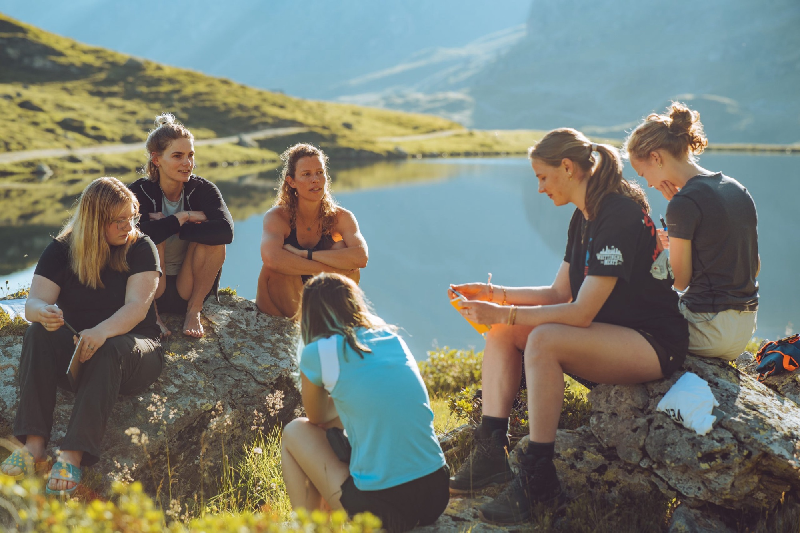
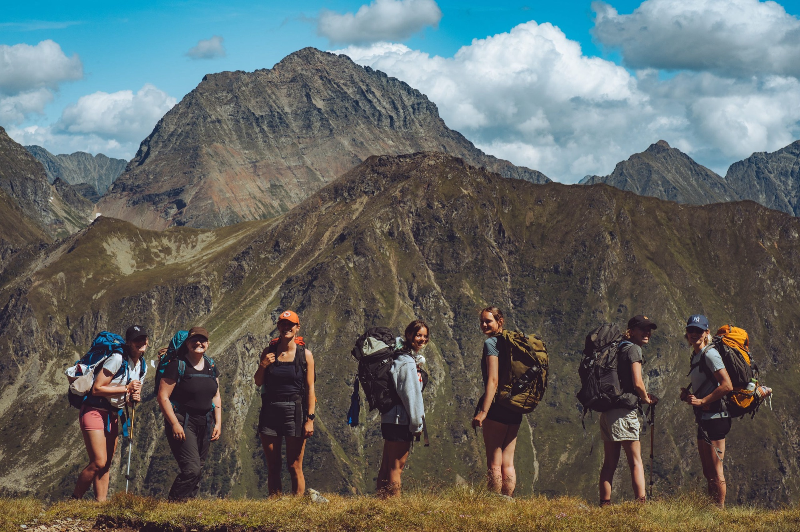
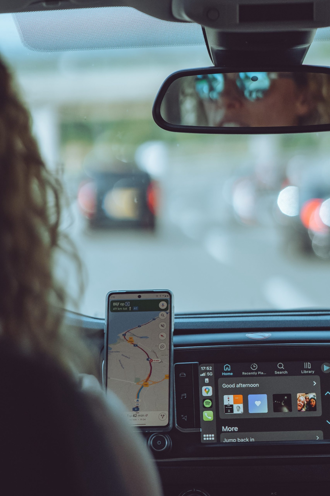
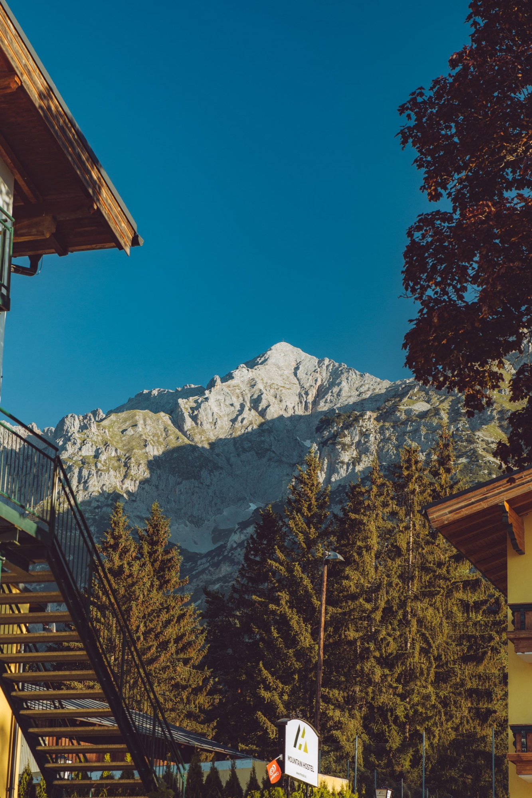
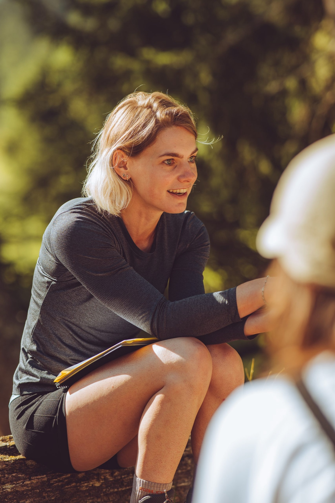
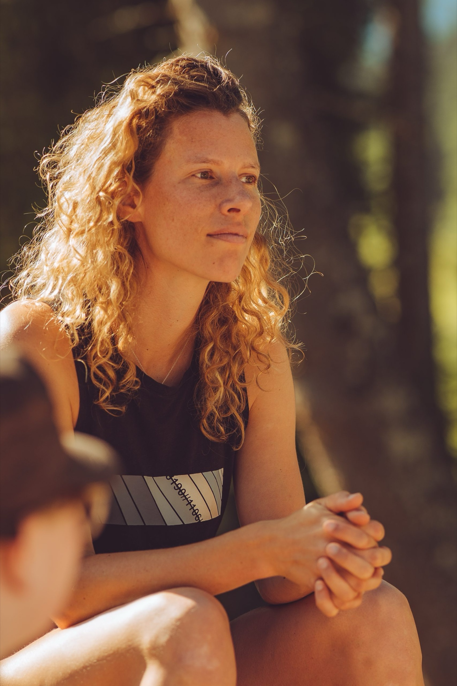
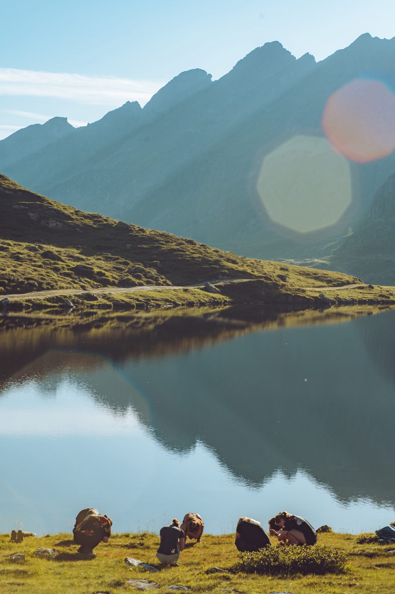
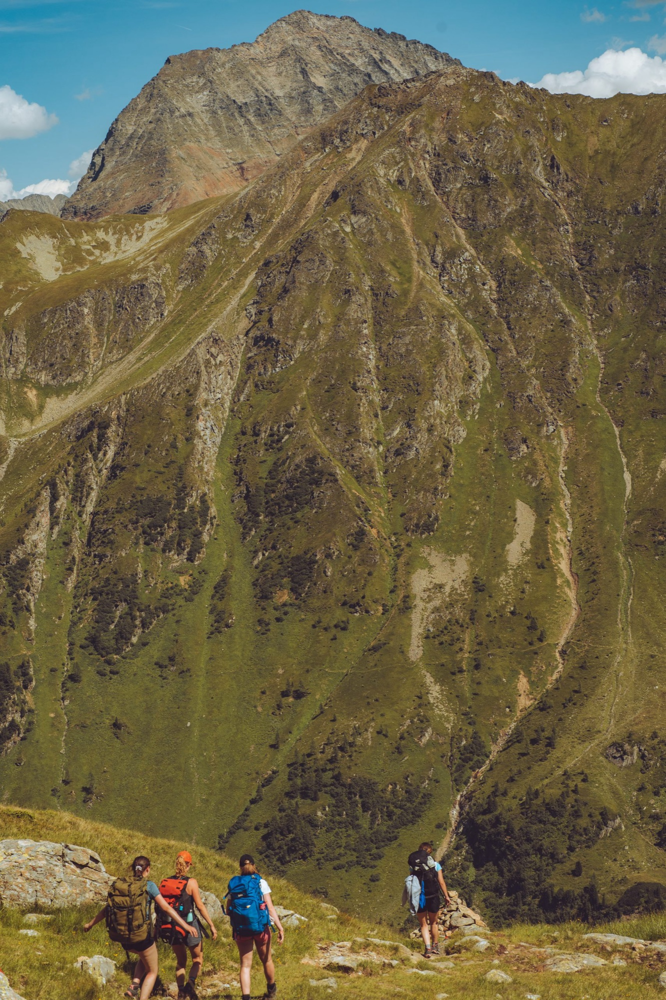
Wat we leveren
"Sebas heeft de Stichting Outdoor Therapie enorm geholpen. De professionaliteit was meteen hoog. Hij inspireert en brengt andere bedrijven naar een hoger level."— Manouk Vernij, Outdoor Therapie
Productie: sircle.agency · Doorlopend partnership sinds 2021